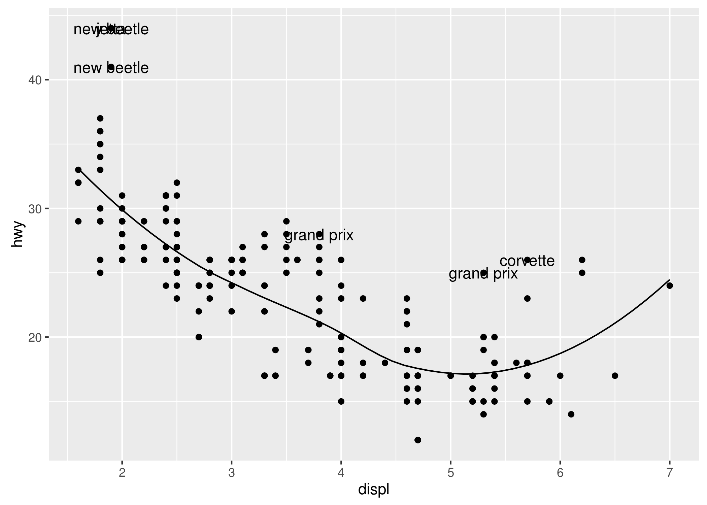
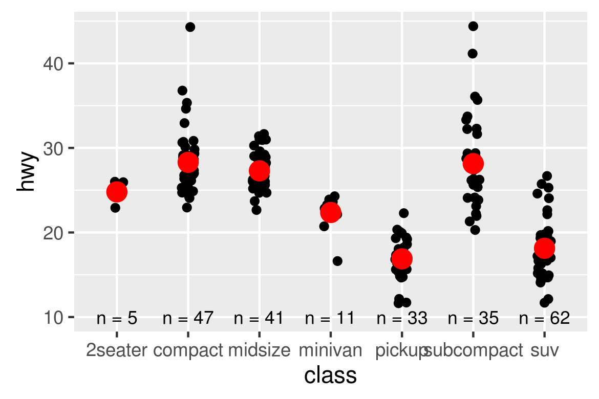
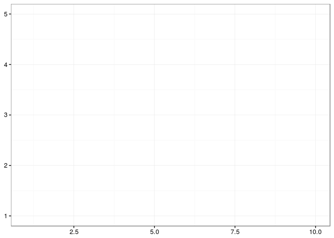

4 R code from Jeff Leek’s page
The source R script available here
Contents
4.1 Dependencies
This document depends on the following packages:
library(devtools)
library(Biobase)
library(sva)
library(bladderbatch)
library(snpStats)
To install these packages you can use the code (or if you are compiling
the document, remove the eval=FALSE from the chunk.)
install.packages(c("devtools"))
source("http://www.bioconductor.org/biocLite.R")
biocLite(c("Biobase","sva","bladderbatch","snpStats"))
4.2 Download the data
The analyses performed in this experiment are based on gene expression measurements from a bladder cancer study: Gene expression in the urinary bladder: a common carcinoma in situ gene expression signature exists disregarding histopathological classification. The data can be loaded from the bladderbatch data package.
data(bladderdata)
4.3 Set up the data
pheno = pData(bladderEset)
edata = exprs(bladderEset)
4.4 Adjusting for batch effects with a linear model
We will use two models. One with the variable we care about (cancer status) and the other that is just the known adjustment variables (in this case we will assume none)
mod = model.matrix(~as.factor(cancer) + as.factor(batch),data=pheno)
fit = lm.fit(mod,t(edata))
hist(fit$coefficients[2,],col=2,breaks=100)

This will only work if the batch effects aren’t too highly correlated with the outcome. Let’s check that
table(pheno$cancer,pheno$batch)
##
## 1 2 3 4 5
## Biopsy 0 0 0 5 4
## Cancer 11 14 0 0 15
## Normal 0 4 4 0 0
4.5 Adjusting for batch effects with Combat
Another approach is to use Combat. Combat returns a “cleaned” data matrix after batch effects have been removed. Here we pass a model matrix with any known adjustment variables and a second parameter that is the batch variable.
batch = pheno$batch
modcombat = model.matrix(~1, data=pheno)
modcancer = model.matrix(~cancer, data=pheno)
combat_edata = ComBat(dat=edata, batch=batch, mod=modcombat, par.prior=TRUE, prior.plots=FALSE)
## Found 5 batches
## Adjusting for 0 covariate(s) or covariate level(s)
## Standardizing Data across genes
## Fitting L/S model and finding priors
## Finding parametric adjustments
## Adjusting the Data
combat_fit = lm.fit(modcancer,t(combat_edata))
hist(combat_fit$coefficients[2,],col=2,breaks=100)

4.6 Comparing Combat and linear adjustment
We can compare the estimated coefficients from Combat and linear adjustment by looking at the right coefficients for each model.
plot(fit$coefficients[2,],combat_fit$coefficients[2,],col=2,
xlab="Linear Model",ylab="Combat",xlim=c(-5,5),ylim=c(-5,5))
abline(c(0,1),col=1,lwd=3)

4.7 Adjusting for batch effects with sva
First we need to estimate the surrogate variables. To do this, we need
to build a model with any known adjustment variables and the variable we
care about mod and another model with only the adjustment variables.
Here we won’t adjust for anything to see if sva can “discover” the
batch effect.
mod = model.matrix(~cancer,data=pheno)
mod0 = model.matrix(~1, data=pheno)
sva1 = sva(edata,mod,mod0,n.sv=2)
## Number of significant surrogate variables is: 2
## Iteration (out of 5 ):1 2 3 4 5
See if any of the variables correlate with batch
summary(lm(sva1$sv ~ pheno$batch))
## Response Y1 :
##
## Call:
## lm(formula = Y1 ~ pheno$batch)
##
## Residuals:
## Min 1Q Median 3Q Max
## -0.26953 -0.11076 0.00787 0.10399 0.19069
##
## Coefficients:
## Estimate Std. Error t value Pr(>|t|)
## (Intercept) -0.018470 0.038694 -0.477 0.635
## pheno$batch 0.006051 0.011253 0.538 0.593
##
## Residual standard error: 0.1345 on 55 degrees of freedom
## Multiple R-squared: 0.00523, Adjusted R-squared: -0.01286
## F-statistic: 0.2891 on 1 and 55 DF, p-value: 0.5929
##
##
## Response Y2 :
##
## Call:
## lm(formula = Y2 ~ pheno$batch)
##
## Residuals:
## Min 1Q Median 3Q Max
## -0.23973 -0.07467 -0.02157 0.08116 0.25629
##
## Coefficients:
## Estimate Std. Error t value Pr(>|t|)
## (Intercept) 0.121112 0.034157 3.546 0.000808 ***
## pheno$batch -0.039675 0.009933 -3.994 0.000194 ***
## ---
## Signif. codes: 0 '***' 0.001 '**' 0.01 '*' 0.05 '.' 0.1 ' ' 1
##
## Residual standard error: 0.1187 on 55 degrees of freedom
## Multiple R-squared: 0.2248, Adjusted R-squared: 0.2107
## F-statistic: 15.95 on 1 and 55 DF, p-value: 0.0001945
boxplot(sva1$sv[,2] ~ pheno$batch)
points(sva1$sv[,2] ~ jitter(as.numeric(pheno$batch)),col=as.numeric(pheno$batch))

Add the surrogate variables to the model matrix and perform the model fit
modsv = cbind(mod,sva1$sv)
fitsv = lm.fit(modsv,t(edata))
Compare the fit from surrogate variable analysis to the other two.
par(mfrow=c(1,2))
plot(fitsv$coefficients[2,],combat_fit$coefficients[2,],col=2,
xlab="SVA",ylab="Combat",xlim=c(-5,5),ylim=c(-5,5))
abline(c(0,1),col=1,lwd=3)
plot(fitsv$coefficients[2,], fit$coefficients[2,],col=2,
xlab="SVA",ylab="linear model",xlim=c(-5,5),ylim=c(-5,5))
abline(c(0,1),col=1,lwd=3)

4.8 Principal components for population structure
Load an example data set and take a smaller subset of samples for computational efficiency
data(for.exercise)
controls <- rownames(subject.support)[subject.support$cc==0]
use <- seq(1, ncol(snps.10), 10)
ctl.10 <- snps.10[controls,use]
Calculate the PCs
xxmat <- xxt(ctl.10, correct.for.missing=FALSE)
evv <- eigen(xxmat, symmetric=TRUE)
pcs <- evv$vectors[,1:5]
Let’s compare the PCs to the population labels and see that PC1 captures the population variable very well
pop <- subject.support[controls,"stratum"]
plot(pcs[,1],pcs[,2],col=as.numeric(pop),
xlab="PC1",ylab="PC2")
legend(0,0.15,legend=levels(pop),pch=19,col=1:2)

4.9 Notes and further resources
You can read more about batch effect corrections in the sva package vignette.There are actually a large number of variants on the sva batch correction idea. Some good ones are:
There are also some alternatives for PCA analysis in R in addition to
the usual svd and pr.comp functions.